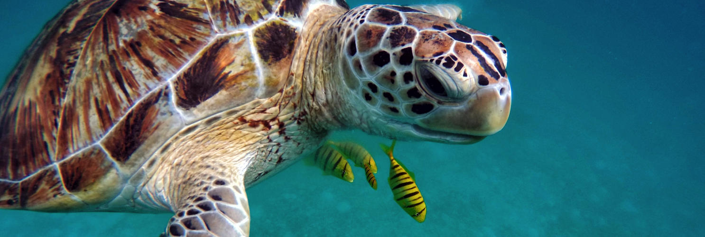

Green turtles (Chelonia mydas)
It is a herbivore and goes by the scientific name Chelonia mydas. They are among the world's largest marine turtles. They can grow up to 5 feet long and weigh up to 700 pounds on average. They are a species that is on the verge of extinction, and its population has been declining over time. Because of the greenish hue and color of its skin, this animal is known as the "green turtle."
Hawskbill (Eretmochelys imbricata)
It is a carnivore with the scientific name Eretmochelys imbricata. A hawksbill turtle can reach a size of 24 to 45 inches and has an average lifespan of 30 to 50 years. They are between 100 and 150 pounds in weight. They have a heart-shaped upper shell and are known as hawksbill turtles because of their sharp, pointed mouths that resemble bird beaks. Their pair of claws is another distinguishing trait. When compared to the females, hawkbills' tails are longer and thicker in the males.
Olive Ridley (Lepidochelys olivacea)
The scientific name for Olive Ridley Sea Turtles is Lepidochelys olivacea. Like Green turtles they too are omnivores. Their average life span in the wild on average is up to 50 years of life and they can grow up to 2.5 feet in length. Their weight averages up to 100 pounds. It’s named Olive Ridley for its greenish skin color as well as its carapace. They are the smallest of the sea turtles in Sri Lanka.
Loggerhead (Caretta caretta)
Loggerheads are carnivores and their scientific name is Caretta caretta. They are classified as the largest of all hard-shelled sea turtles. Its name comes from its appearance of having a large head in comparison to other turtles. They grow up to 36 inches and weight on average up to 253 pounds.
Leatherback (Dermochelys)
Loggerheads are carnivores and their scientific name is Caretta caretta. They are classified as the largest of all hard-shelled sea turtles. Its name comes from its appearance of having a large head in comparison to other turtles. They grow up to 36 inches and weight on average up to 253 pounds.